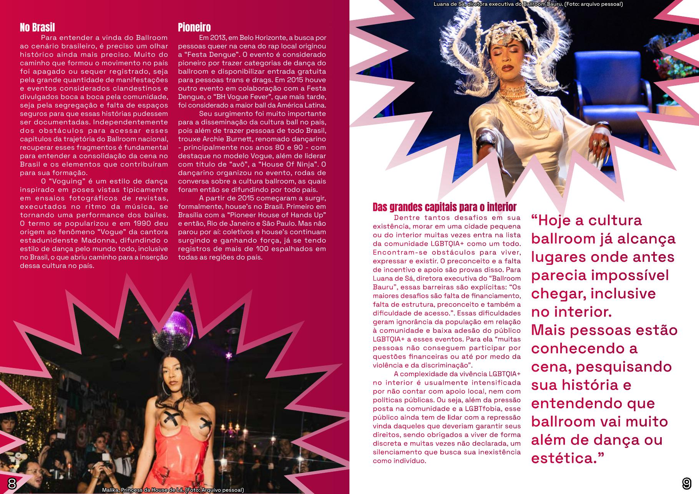

Nos anos 1970, em Nova York, os grandes bailes eram marcados por desfiles e premiações. Ao mesmo tempo, pessoas negras, latinas e da comunidade LGBTQIA+ enfrentavam exclusão social e artística.
House of LaBeija
Nesse cenário surge Crystal LaBeija, mulher trans, negra e drag queen. Cansada de ser negligenciada, ela cria seu próprio espaço, com categorias, jurados, shows e batalhas. Nascia ali um ambiente de pertencimento, aceitação e expressão da arte.
“Ballroom nasce da exclusão, mas transforma isso em arte, comunidade e potência.”
Refúgios de uma retaliação
As houses são espaços de socialização, acolhimento emocional e suporte socioeconômico. Elas ressignificam a ideia de família e funcionam como uma grande rede coletiva para quem ainda procura um lugar no mundo.

Existir é um ato político
Mais do que dança ou estética, a cultura Ballroom é lugar de arte, incentivo e dignidade. Quando a sociedade não oferece acolhimento, a própria comunidade constrói suas casas, seus palcos e suas famílias.